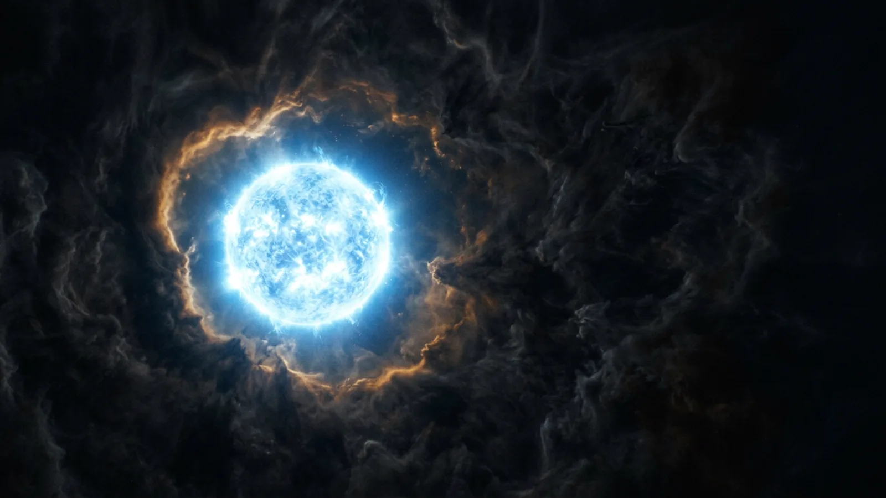
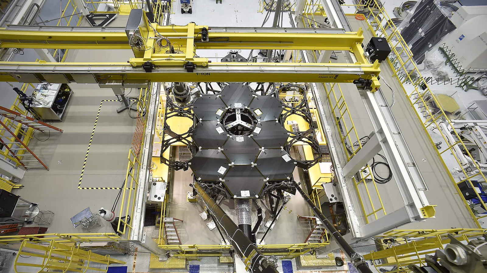
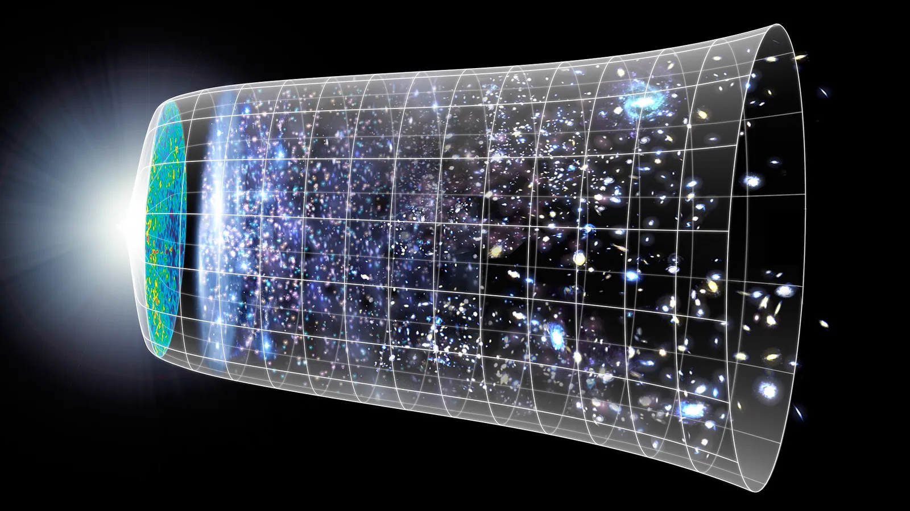
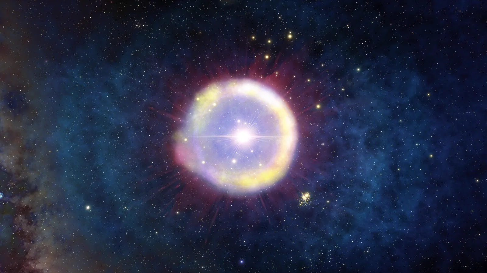
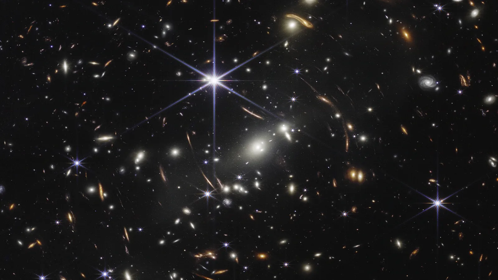
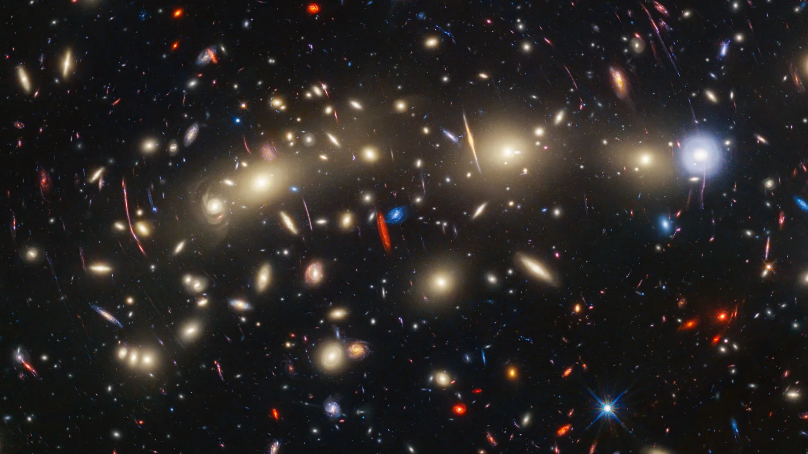
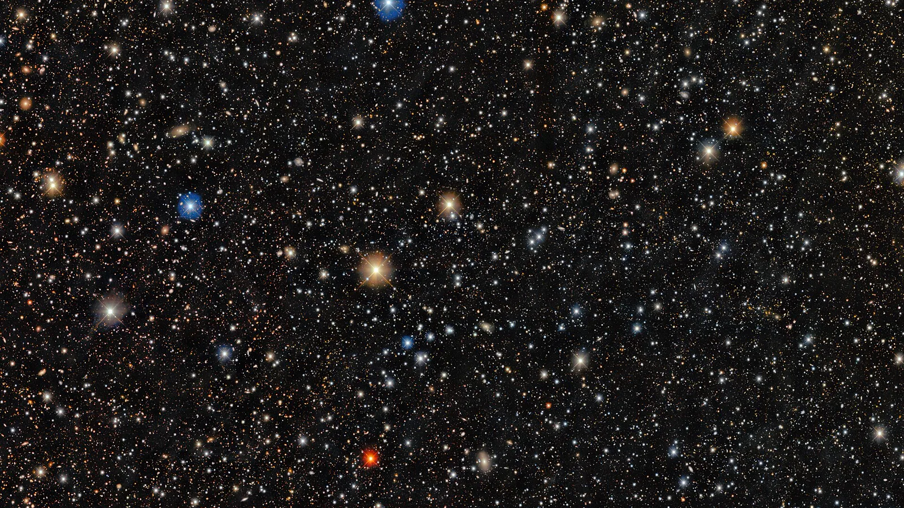

As primeiras estrelas
Depois da primeira luz, o universo ficou escuro. As estrelas que acabaram com esse escuro ninguém nunca viu, e a régua ganha a primeira faixa: de 3 a 8 de janeiro.
No episódio anterior: a primeira luz, às 00:14 do 1º de janeiro.

Quando a primeira acendeu

A idade das trevas
Depois da primeira luz, o universo ficou opaco de novo pros comprimentos de onda curtos: os átomos de hidrogênio absorviam essa luz.

O que a teoria espera delas
Nascidas de um gás que só tinha hidrogênio e hélio, em aglomerados pequenos. Dentro delas saíram os primeiros elementos mais pesados, como carbono e ferro, espalhados quando elas explodiram.

Por que ninguém viu
Viviam pouco, eram fracas e estão longe demais: a luz delas chega esticada até o infravermelho. É por isso que o James Webb foi feito pra enxergar infravermelho.

O melhor candidato chegou atrasado
A LAP1-B, uma galáxia muito fraca vista pelo Webb, com a luz ampliada pelo aglomerado MACS J0416: oxigênio de uns 1/240 do Sol, a quimicamente mais primitiva já achada.

A régua ganha uma faixa
A química que elas deixaram
No próximo episódio: em 8 de janeiro já existe galáxia. A mais distante já confirmada, e um recorde que caiu duas vezes em dois anos.
